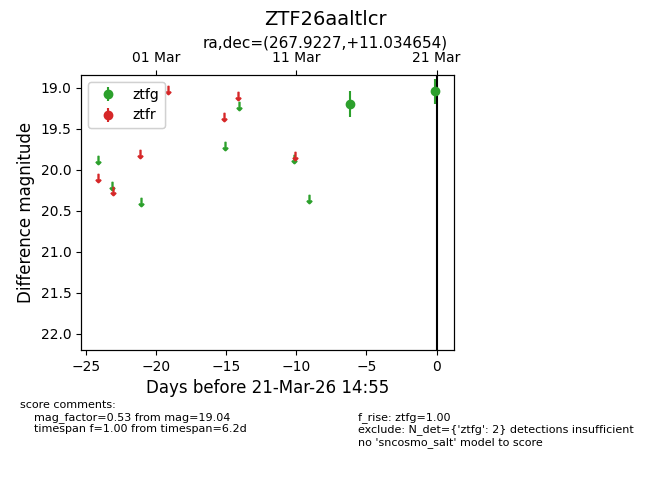
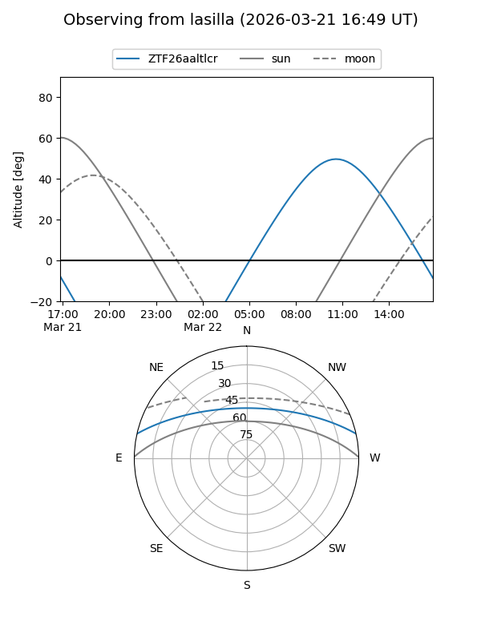
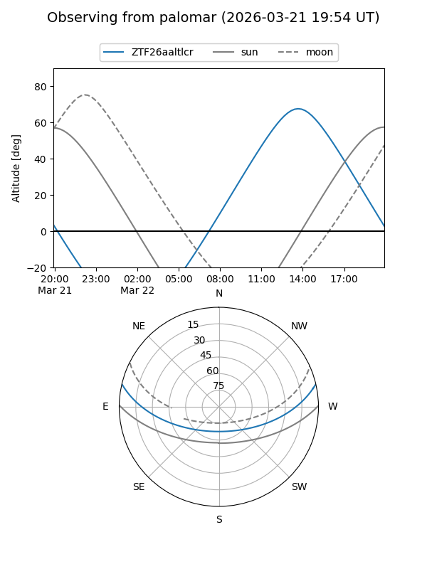

ZTF26aaltlcr
Target ZTF26aaltlcr at 2026-03-21 14:57
Aliases and brokers:
FINK: link
Lasair: link
ALeRCE: link
alt names
ZTF26aaltlcr (ztf,fink_ztf)
Coordinates:
equatorial (ra, dec) = 267.9227,+11.03465
equatorial (HMS+DMS) = 17:51:41.45,+11:02:04.76
galactic (l, b) = (36.2504,+18.20587)
Flags:
Photometry:
last ztfg=19.04
2 ztfg detections
Lightcurve

Visibility


Additional plots